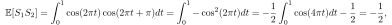
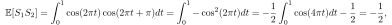
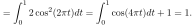
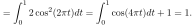
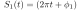
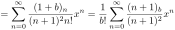
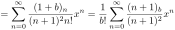

Next: About this document ... Up: Blog posts 2025 Previous: Blog posts 2025 Contents
The obvious trend that artificial intelligence (AI) and machinge learning (ML) are the hot topic of the day. This is why want to address how stochastic geometry (SG) can and will be utilized in the modern ML by providing hypothesis classes for the ML algorithms.
Sometimes one hears that SG and ML has are as far as rivals: if so, the ML community may declare the victory of the battle, maybe for the entire war, given the purely economical performance meters: SG has transformed from an academic exercise into the industry only in marginal sense; however, as of today, the ML is encompassed everywhere in the industry and academy. However, I am sure that most people agree that such rivalry is not the only way to see the situation. So is the (extensively ongoing) study of SG useless? It definitely is not. Let us address why.
Le me formulate the working definitions of the ML and SG. We focus on the signal processing of wireless networks aspects, and particularly interference modeling and its statistical inference.
ML algorithms are often based in Gaussian process regression (GPR). The landscape of such algorithms is vast. The GPR signal prediction is based in prior autocovariance, or more generally, correlation functions, which can be arbitrary. One may numerically estimate the autocovariance from empirical data; however, this approach can lead to uncontrollable numerical cliches. Hence, it is usefull to base the estimations in a theoretical estimate of the correlation functions, which guides us to right direction in infering the empirical data at hand. (For example, the numerical estimations of autocovariance function may fluctuate vastly, depending on the sampled realization of the data, even though the data statistics would in principle be invariant.) In the following, we demonstrate a simple example of estimating the power of a non-stationary Gaussian interference signal at a low Earth orbit base station (LEO BS). The prior autocovariance function is derived from a theoretical estimate based in SG, and based in this autocovariance, the power estimation is conducted from empirical data by using GPR.
The theoretical settings are:
 kHz are distributed according to the Poisson point process
(PPP) on the Earth surface causing interference at the LEO BS.
kHz are distributed according to the Poisson point process
(PPP) on the Earth surface causing interference at the LEO BS.
 dB beamwidth
dB beamwidth
 rad steered towards the Earth center.
rad steered towards the Earth center.
 km moving at its orbital speed
km moving at its orbital speed
 km/s.
km/s.
The key insight acquired from the SG is that in such settings, the normalized interference power  at the LEO BS is closely gamma distributed
with the mean
at the LEO BS is closely gamma distributed
with the mean
 and the variance
var. Furthermore, the autocovariance at lag
and the variance
var. Furthermore, the autocovariance at lag  has the Gaussian form
has the Gaussian form
 . This is the prior correlation
model we will utilize in the GPR: the decribed
. This is the prior correlation
model we will utilize in the GPR: the decribed  is the hypothesis class of the set of functions within which we search our estimation.
is the hypothesis class of the set of functions within which we search our estimation.
Note that the constant
 is directly defined by the altitude  of the satellite: the orbital speed
is directly defined by the altitude  of the satellite: the orbital speed
 follows single-handly from the altitude. On the contrary, the scaling parameter
follows single-handly from the altitude. On the contrary, the scaling parameter
 would have generally a dependency on the density of the interferers (in our case, the received power being normalized). However, it can be empirically verified that within a fairly general density region, the assertion of
would have generally a dependency on the density of the interferers (in our case, the received power being normalized). However, it can be empirically verified that within a fairly general density region, the assertion of  is more crucial for the GPR estimation: too large and small leads to overfitting
and underfitting of the data, respectively. On the other hand, these two parameters can be also set as hyperparameters
that are learned from the data—of course, also in this case, the proposed SG-based hypothesis class of encompasses important insights through its the gamma distribution and the Gaussian correlation function.
is more crucial for the GPR estimation: too large and small leads to overfitting
and underfitting of the data, respectively. On the other hand, these two parameters can be also set as hyperparameters
that are learned from the data—of course, also in this case, the proposed SG-based hypothesis class of encompasses important insights through its the gamma distribution and the Gaussian correlation function.
Furthermore, it can be shown that, under fairly general settings, the LEO BS receives a waveform
, where  is a near-Gaussian noise waveform. This means that
is a near-Gaussian noise waveform. This means that  can be approximated by a non-stationary Gaussian process with the varying variance . We will sample
can be approximated by a non-stationary Gaussian process with the varying variance . We will sample  to estimate the interference power .
to estimate the interference power .
In Figures 1(a) and 1(b), we estimate the interference power from a sampled (sampling frequency  kHz) realization of by using GPR and (non-causal) moving average
(MA). (The window size of the MA is empirically optimized.) The power modulator is generated through a latent Gaussian process
based in the gamma distribution and the second-order statistics, which we accept as a sufficient approximation (the “actual” should be generated by moving the LEO BS over the PPP distributed interferers on the Earth surface).
kHz) realization of by using GPR and (non-causal) moving average
(MA). (The window size of the MA is empirically optimized.) The power modulator is generated through a latent Gaussian process
based in the gamma distribution and the second-order statistics, which we accept as a sufficient approximation (the “actual” should be generated by moving the LEO BS over the PPP distributed interferers on the Earth surface).
Altough the MA might capture reasonably well (as long as the window size is optimized), the GPR prediction is clearly able to better capture the smootheness of the signal power modulating the Gaussian noise. Furthermore, the GPR prediction captures the from  onwards, which is impossible for the non-causal, centralized MA, which starts at
s. The forecast
region in the figure corresponds to a causal estimation of the signal future based in the past values: Not so suprisingly, the GPR is suprerior to MA in this regard.
onwards, which is impossible for the non-causal, centralized MA, which starts at
s. The forecast
region in the figure corresponds to a causal estimation of the signal future based in the past values: Not so suprisingly, the GPR is suprerior to MA in this regard.
![\includegraphics[width=\linewidth]{GPRvsMA.pdf}](img177.svg)